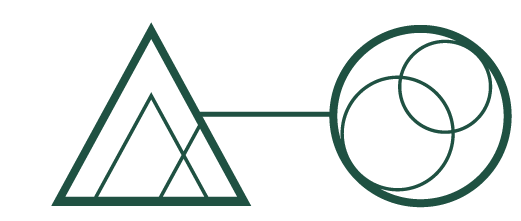
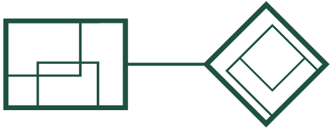

Aprenda. Consulte. Ensine melhor.
Tutoriais, referências e trilhas práticas sobre Moodle, acessibilidade e IA na educação. Resolva o que você precisa e volte para a sala virtual.
Conteúdos individuais
Artigos em destaque
Uma amostra dos conteúdos mais buscados, um de cada categoria. O catálogo completo, com filtros por categoria, tipo e ordenação, fica na página de artigos.

Configurando o livro de notas do Moodle
Passo a passo para estruturar categorias, pesos e cálculos de notas. Do zero ao relatório final.

H5P: tipos de conteúdo interativo e quando usar cada um
Guia de referência dos 20+ tipos de conteúdo H5P com exemplos reais de cursos do CEFOR.
Como conceder tempo ampliado em um questionário
Passo a passo para configurar extensão de tempo individual para estudantes com necessidades específicas.

O que é design educacional e por que ele importa
Conceitos fundamentais do design educacional aplicados ao contexto do ensino a distância no Ifes.

Direitos autorais no Moodle: o que pode e o que não pode
Guia jurídico simplificado sobre uso de imagens, textos e vídeos em materiais de curso do Ifes.

Padrão visual do CEFOR: cores, tipografia e aplicação
Visão geral do sistema de identidade visual aplicado a materiais didáticos e MOOC.
Sequências guiadas
Trilhas em destaque
Conjuntos de artigos na ordem certa para resolver um objetivo específico, do começo ao fim.
Avaliação online de ponta a ponta
Estruture a avaliação no Moodle: da configuração de atividades ao fechamento de notas.

Avaliação acessível para todos os estudantes
Tempo ampliado no questionário, audiodescrição em imagens e cuidados de acessibilidade ao inserir recursos.

Avaliações com IA generativa
Da Taxonomia de Bloom 2.0 à geração de questionários e rubricas com o GPT, aplicada à sala virtual.
Jornadas completas
Percursos
Programas temáticos que reúnem trilhas e artigos para você ir do primeiro contato ao domínio de um assunto.
Dominando o Moodle
Conduza uma sala virtual de ponta a ponta: da sala vazia ao curso avaliado no ar, passando pelo fechamento de notas.

Enriquecendo aulas com mídia
Crie conteúdo interativo com H5P, conduza aulas ao vivo por webconferência e acompanhe o progresso na sala virtual.

Tornando o ensino acessível
Avaliação acessível e conteúdo em Libras no AVA, com desenho universal aplicado aos cursos a distância.